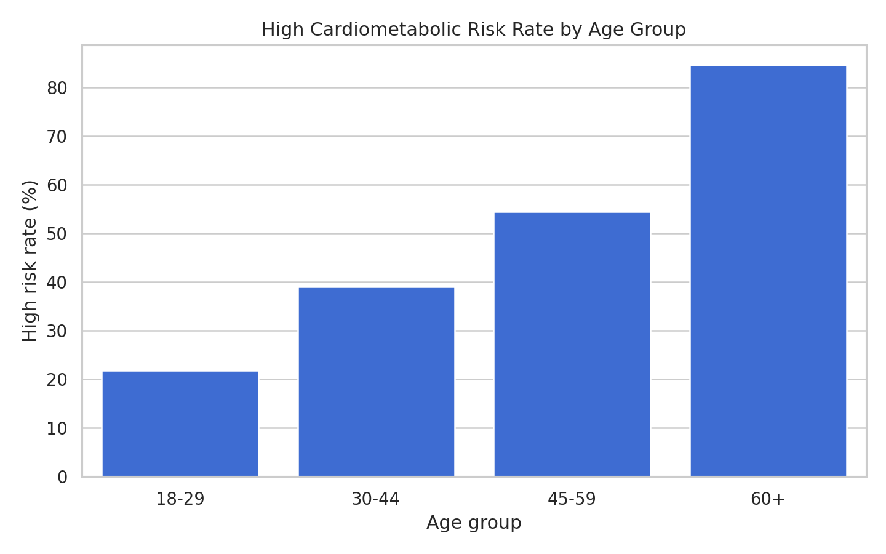
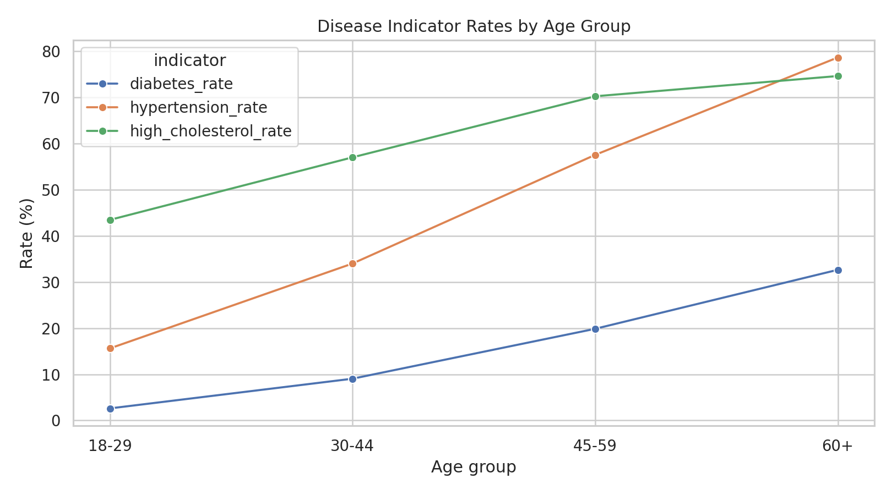
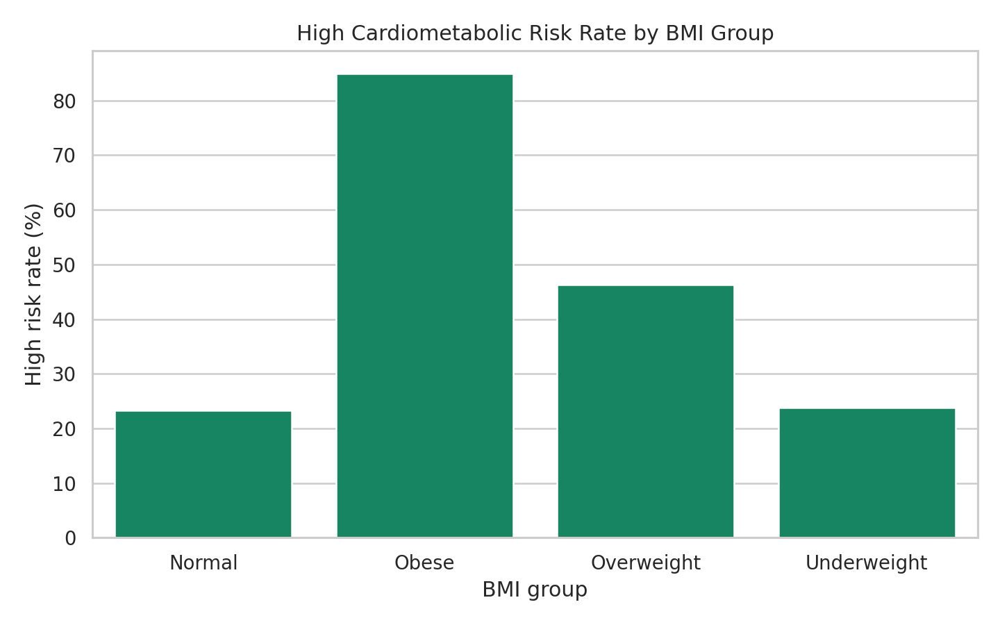
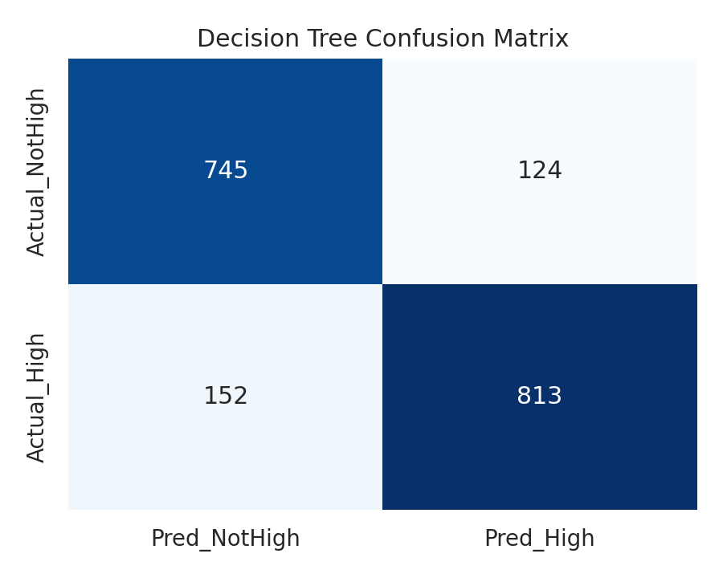
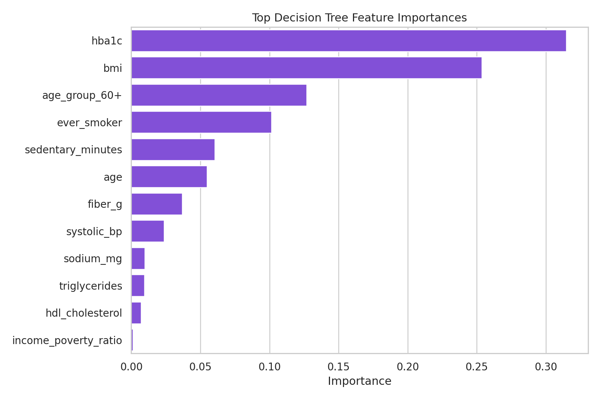

本报告由项目流水线自动生成，覆盖数据预处理、数据仓库、聚合分析、Apriori 关联规则和决策树分类。
| age_group | participants | mean_age | mean_bmi | mean_systolic_bp | mean_hba1c | mean_total_cholesterol | high_risk_rate | diabetes_rate | hypertension_rate | high_cholesterol_rate | obesity_rate |
|---|---|---|---|---|---|---|---|---|---|---|---|
| 18-29 | 1300 | 22.735 | 27.203 | 113.604 | 5.245 | 169.888 | 0.218 | 0.026 | 0.156 | 0.435 | 0.262 |
| 30-44 | 1547 | 37.085 | 29.453 | 117.259 | 5.508 | 190.595 | 0.390 | 0.090 | 0.340 | 0.570 | 0.391 |
| 45-59 | 1425 | 51.821 | 29.667 | 123.152 | 5.902 | 198.085 | 0.544 | 0.199 | 0.575 | 0.702 | 0.394 |
| 60+ | 1841 | 70.014 | 28.898 | 131.800 | 6.043 | 186.876 | 0.845 | 0.326 | 0.787 | 0.746 | 0.351 |


| bmi_group | participants | mean_age | mean_bmi | mean_systolic_bp | mean_hba1c | mean_total_cholesterol | high_risk_rate | diabetes_rate | hypertension_rate | high_cholesterol_rate | obesity_rate |
|---|---|---|---|---|---|---|---|---|---|---|---|
| Normal | 1761 | 44.030 | 22.379 | 119.267 | 5.438 | 181.539 | 0.233 | 0.085 | 0.339 | 0.470 | 0.000 |
| Obese | 2120 | 48.531 | 36.288 | 125.022 | 5.953 | 190.058 | 0.849 | 0.256 | 0.628 | 0.756 | 1.000 |
| Overweight | 2110 | 49.413 | 27.457 | 122.102 | 5.699 | 188.452 | 0.464 | 0.172 | 0.487 | 0.636 | 0.015 |
| Underweight | 122 | 40.836 | 17.461 | 118.923 | 5.353 | 178.426 | 0.238 | 0.033 | 0.328 | 0.402 | 0.000 |

| antecedent | consequent | support | confidence | lift | antecedent_support | consequent_support |
|---|---|---|---|---|---|---|
| Age=60+ + BMI=Obese | Risk=High | 0.103 | 0.989 | 1.879 | 0.104 | 0.526 |
| BMI=Obese + Diabetes=Yes | Risk=High | 0.087 | 0.983 | 1.868 | 0.089 | 0.526 |
| Rx=Antihypertensive + Rx=Statin | Hypertension=Yes | 0.125 | 0.910 | 1.855 | 0.138 | 0.490 |
| Age=60+ + Diabetes=Yes | Risk=High | 0.096 | 0.972 | 1.846 | 0.098 | 0.526 |
| BMI=Obese + Diabetes=Prediabetes | Risk=High | 0.082 | 0.967 | 1.838 | 0.085 | 0.526 |
| BMI=Obese + Hypertension=Yes | Risk=High | 0.210 | 0.963 | 1.830 | 0.218 | 0.526 |
| Diabetes=Yes + Smoking=Ever | Risk=High | 0.080 | 0.961 | 1.825 | 0.084 | 0.526 |
| Diabetes=Yes + Hypertension=Yes | Risk=High | 0.123 | 0.959 | 1.822 | 0.128 | 0.526 |
| Activity=SedentaryHigh + BMI=Obese | Risk=High | 0.087 | 0.959 | 1.821 | 0.091 | 0.526 |
| Diabetes=Yes + Diet=FiberLow | Risk=High | 0.091 | 0.954 | 1.811 | 0.095 | 0.526 |
| BMI=Obese + Smoking=Ever | Risk=High | 0.141 | 0.952 | 1.809 | 0.148 | 0.526 |
| Cholesterol=High + Diabetes=Yes | Risk=High | 0.135 | 0.944 | 1.793 | 0.143 | 0.526 |
| samples | train_samples | test_samples | positive_rate | accuracy | precision | recall | f1 |
|---|---|---|---|---|---|---|---|
| 6113.000 | 4279.000 | 1834.000 | 0.526 | 0.850 | 0.868 | 0.842 | 0.855 |

| feature | importance |
|---|---|
| hba1c | 0.315 |
| bmi | 0.254 |
| age_group_60+ | 0.127 |
| ever_smoker | 0.101 |
| sedentary_minutes | 0.060 |
| age | 0.055 |
| fiber_g | 0.037 |
| systolic_bp | 0.024 |
| sodium_mg | 0.010 |
| triglycerides | 0.009 |
| hdl_cholesterol | 0.007 |
| income_poverty_ratio | 0.001 |
